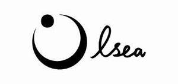

Trade Mark Journal No.2025/024 13 June 2025
UK00004212047 31 May 2025 (14,35,37,40,42)

- Class 14
- Jewelry; Necklaces [jewelry]; Pendants [jewelry]; Bracelets [jewelry]; Brooches [jewelry]; Jewelry brooches; Brooches being jewelry; Jewelry (Paste -) [costume jewelry]; Paste jewelry [costume jewelry]; Necklaces [jewellery, jewelry (Am.)]; Bracelets [jewellery, jewelry (Am.)]; Jewelry stickpins; Ornaments [jewellery, jewelry (Am.)]; Necklaces [jewellery]; Trinkets [jewelry]; Trinkets [jewellery, jewelry (Am.)]; Diamond jewelry; Amulets [jewelry]; Brooches [jewellery, jewelry (Am.)]; Pearls [jewelry]; Lockets [jewelry]; Pearls [jewellery, jewelry (Am.)]; Charms [jewelry]; Jewelry charms; Charms for jewelry; Cloisonné jewellery [jewelry (Am.)]; Amulets [jewellery, jewelry (Am.)]; Costume jewelry; Rings [jewelry]; Charms [jewellery, jewelry (Am.)]; Rings [jewellery, jewelry (Am.)]; Jewellery; Medallions [jewellery, jewelry (Am.)]; Lockets [jewellery, jewelry (Am.)]; Clasps for jewelry; Chains [jewellery, jewelry (Am.)]; Cloisonné jewelry; Jewelry hatpins; Bracelets [jewellery]; Ivory [jewellery, jewelry (Am.)]; Pins [jewellery, jewelry (Am.)]; Jewelry caskets; Shoe jewelry; Pendants [jewellery]; Platinum jewelry; Paste jewellery [costume jewelry [Am.]]; Paste jewellery [costume jewelry (Am.)]; Crucifixes as jewelry; Jewelry chains; Chains [jewelry]; Ornaments [jewellery]; Jewelry boxes; Ivory jewelry; Cameos [jewelry]; Pins being jewelry; Pins [jewelry]; Silver thread [jewellery, jewelry (Am.)]; Gold thread [jewellery, jewelry (Am.)]; Pet jewelry; Gold; Gold bullion; Gold coins; Gold ingots; Gold medals; Gold bullion coins; Gold jewellery; Silver; Gold earrings; Gold bracelets; Gold necklaces; Gold rings; Silver bullion; Gold alloys; Spun silver [silver wire]; Silver ingots; Silver alloys; Silver earrings; Unwrought silver; Silver necklaces; Sterling silver jewellery; Metal wire [precious metal]; Platinum [metal]; Metal works of art [precious metal]; Metal badges for wear [precious metal]; Beads for making jewelry; Cabochons for making jewelry; Rhinestones for making jewelry; Beads for making jewellery; Cabochons for making jewellery; Jewellery made from gold; Jewellery made of glass; Jewellery made of crystal; Bracelets made of embroidered textile [jewelry]; Jewellery made from silver; Jewellery made of plastics; Jewellery incorporating diamonds; Diamonds; Diamond [unwrought]; Cut diamonds; Tanzanite being gemstones; Sapphires; Gemstones; Sapphire; Tourmaline gemstones; Platinum rings; Emeralds; Synthetic stones [jewellery]; Topaz; Jade [jewellery]; Semi-precious gemstones; Spinel [precious stones]; Chalcedony used as gems; Gold plated rings; Gold plated earrings; Opal.
- Class 35
- Design of advertising materials; Auction services; Auction sales (Arranging of -); Conducting of auction sales; Arranging of auctions; Brand positioning; Brand positioning services; Brand testing; Brand strategy services; Advertising services to create corporate and brand identity; Brand creation services; Advertising services to create brand identity for others; Brand creation services (advertising and promotion); Brand evaluation services; Marketing research in the fields of cosmetics, perfumery and beauty products; Product marketing; Retail services in relation to fashion accessories; Product launches; Retail services connected with the sale of furniture; Online retail store services in relation to clothing; Online retail store services relating to clothing; Retail services relating to jewelry; Online retail services relating to jewelry; Retail services in relation to jewellery; Retail store services in the field of clothing; Retail services connected with the sale of clothing and clothing accessories; Mail order retail services for clothing accessories; Business management of wholesale and retail outlets; Retail services in relation to clothing accessories; Online retail store services relating to cosmetic and beauty products; Mail order retail services connected with clothing accessories; Wholesale services relating to jewelry; Business management of retail outlets; Administration of the business affairs of retail stores; Unmanned retail store services relating to drink; Retail services in relation to footwear; Retail services in relation to beer; Retail services in relation to furnishings; Retail services in relation to furniture; Retail services in relation to clothing; Design of advertising logos; Design of marketing surveys; Design of advertising brochures; Design of advertising flyers; Arranging of contracts for others for the buying and selling of goods; Trade marketing [other than selling]; Arranging business introductions relating to the buying and selling of products; Arranging of buying and selling contracts for third parties; Arranging of auction sales.
- Class 37
- Jewelry cleaning; Polishing of jewellery; Repair of jewelry; Jewelry repair; Jewellery cleaning; Diamond mining; Mining for diamonds, precious stones or precious metals; Mining for precious stones.
- Class 40
- Jewelry casting; Cabinet making; Polishing of diamonds; Cutting of diamonds; Polishing of diamonds and other precious stones; Processing and cutting of diamonds and other precious stones; Polishing of gemstones; Cutting of gemstones; Polishing of gems; Gold plating; Custom manufacture of furniture.
- Class 42
- Jewelry design; Design of jewellery; Jewellery design services; Design of clothing; Design of fashion accessories; Fashion design; Design of clothing accessories; Furniture design; Design of furniture; Designing of jewellery; Design of stationery; Design of artwork; Design of furnishings; Authenticating jewelry; Certification of diamonds; Authentication of diamonds; Authenticating diamonds; Diamond authentication and certification services; Authenticating semi-precious gemstones; Grading of precious stones; Authenticating gemstones; Authenticating antiques; Inspection services for new and used vehicles for persons buying or selling their vehicles; Designing of furniture.
YOHOLIFE LTD